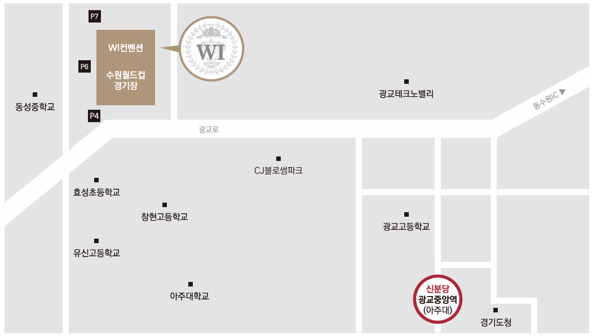

오시는 길
수원 WI컨벤션
경기 수원시 팔달구 월드컵로 310
지선버스 이용시
(수원월드컵경기장, 아름학교 하차)
- 수원역(1호선/수인분당선) 9번출구 150M 직진 (매산시장 정류장) : 13-4번
(수원월드컵경기장, 동성중학교 하차)
- 수원시청역 1번출구 180M 직진 (국민연금공단, 경인일보 정류장) : 80번
- 수원시청역 9번출구 94M 직진 (국민연금공단 정류장) : 99-2번, 4000번, 4500번
- 수원터미널 정류장 : 80번, 3007번, 4000번, 4500번, 7001번, 8800번
광역버스 이용시
(수원월드컵경기장, 동성중학교 하차)
- 서울역버스환승센터 (6번 승강장) : 8800번
- 2호선 을지로입구역 3번 출구 200M 직진 (광교 승차) : 8800번
- 2호선 강남역 5번출구 75M 직진 (강남역나라빌딩 앞 승차) : 3007번
- 2호선 잠실역(송파구청) 2번출구 90M 직진 (잠실역, 롯데월드 승차) : 1007-1번
자가용 이용시
- 내비게이션 : "WI컨벤션" 또는 "수원월드컵경기장 4주차장 또는 7주차장" 입력
- 영동고속도로 : 동수원IC 진입 - 광주•수지(동수원) 방향 왼쪽 - 효성사거리에서 우회전
- 경부고속도로 : 수원IC 진입 - 수원•흥덕•영통 방향 직진 - 경기도청 방면 고가차도 - 우만사거리 동수원IC•월드컵경기장 방면 우회전 - 효성사거리에서 경기남부경찰청 방면 좌회전 ※ 무료주차는 2시간입니다. P6주차장은 혼주전용입니다.